A lightweight singing-voice synthesizer. The multi-speaker acoustic model (harmonic-excitation rectified flow, one step) predicts a mel-spectrogram, rendered to audio by the bundled NHVSing vocoder. This first section is a copy-synthesis check, driven by the real F0, durations and phonemes taken from each recording.
Per singer, 3 phrases from training songs and 2 from held-out songs (eval, never seen in training). Columns: the original audio, the model's synthesis, and their mel-spectrograms — GT mel, the model's mel, and the mel of the vocoded output. mel-L1 is the L1 distance to the GT mel (lower = closer); it does not track perception, so judge by ear.
| phrase | GT audio | Synth audio | GT mel | Model mel | Vocoded mel |
|---|---|---|---|---|---|
| fujino_yama_0000 train 5.5s · L1 1.049 | 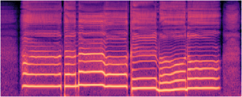 | 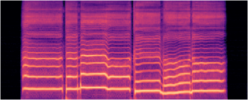 | 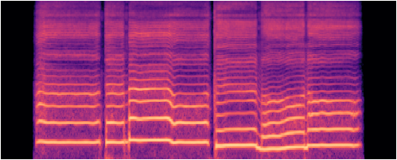 | ||
| hamabeno_uta_0003 train 6.7s · L1 0.904 | 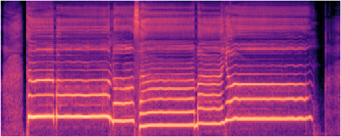 | 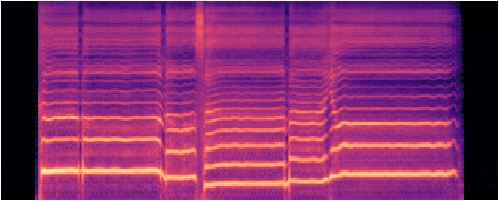 | 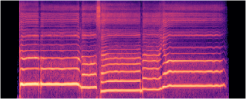 | ||
| kachushano_uta_0005 train 5.2s · L1 0.768 | 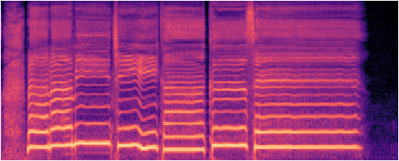 | 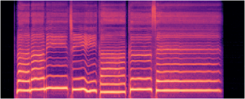 | 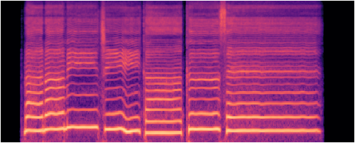 | ||
| sakura_sakura_0001 eval 5.7s · L1 1.306 | 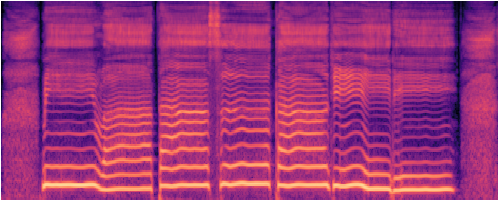 | 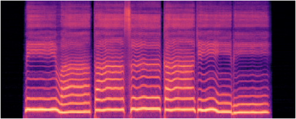 | |||
| sakura_sakura_0006 eval 5.8s · L1 1.388 | 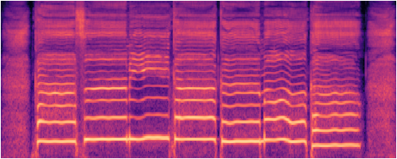 | 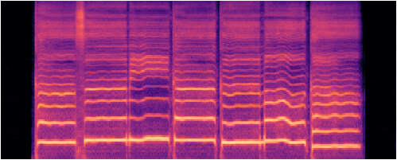 | 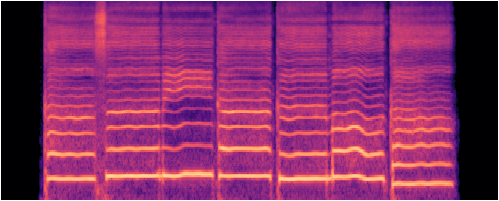 |
| phrase | GT audio | Synth audio | GT mel | Model mel | Vocoded mel |
|---|---|---|---|---|---|
| 12_0001 train 3.8s · L1 0.817 | 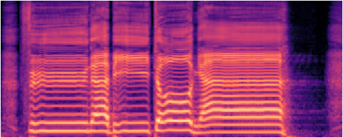 | 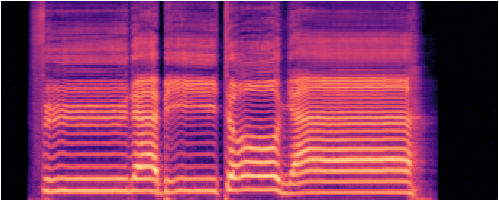 | 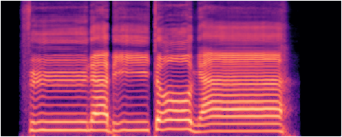 | ||
| 1_0012 train 4.8s · L1 0.797 | 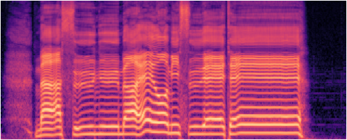 | 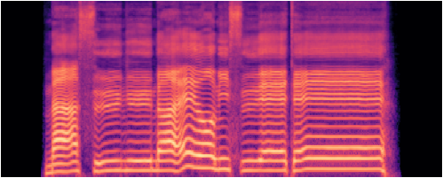 | |||
| 23_0002 train 4.7s · L1 0.983 | 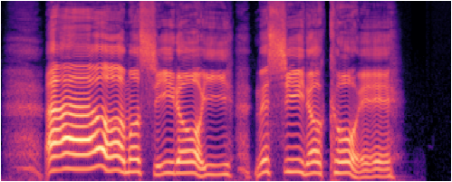 | 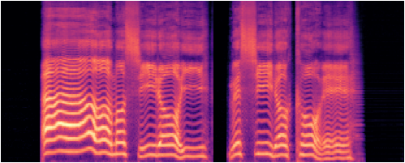 | 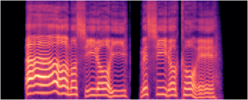 | ||
| 46_0006 eval 4.7s · L1 0.792 | 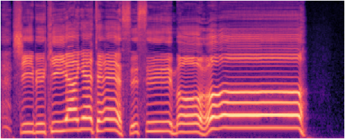 | 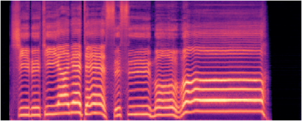 | 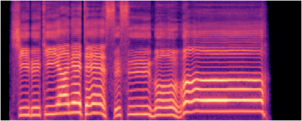 | ||
| 46_0016 eval 5.0s · L1 1.112 | 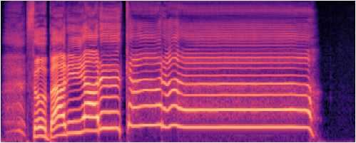 | 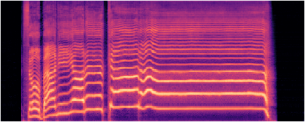 | 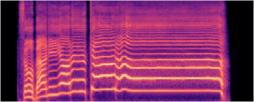 |
| phrase | GT audio | Synth audio | GT mel | Model mel | Vocoded mel |
|---|---|---|---|---|---|
| FACE_0000 train 4.8s · L1 0.859 | 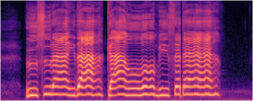 | 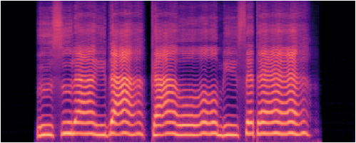 | 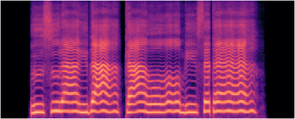 | ||
| byebye_aimai_sound_0009 train 4.7s · L1 0.659 | 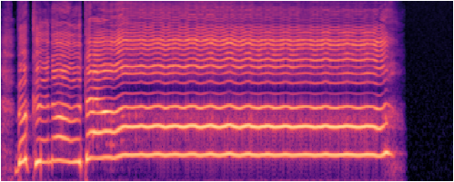 | 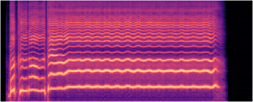 | 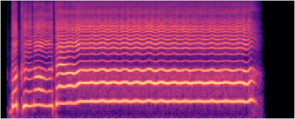 | ||
| dokomademomukuni_0000 train 3.9s · L1 0.843 | 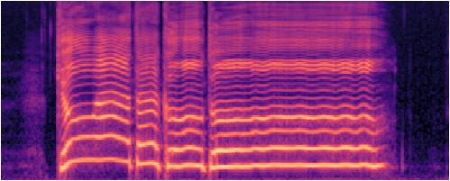 | 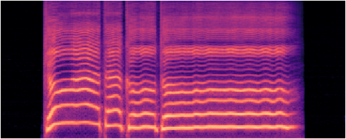 | 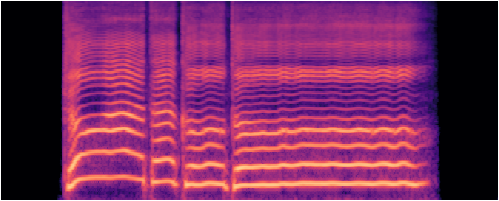 | ||
| FlashBlack_0004 eval 4.2s · L1 0.859 | 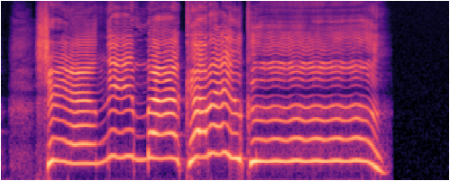 | 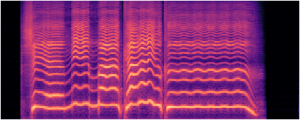 | 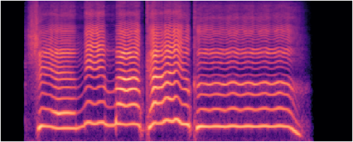 | ||
| night_shief_0002 eval 5.5s · L1 0.930 | 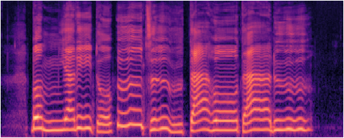 | 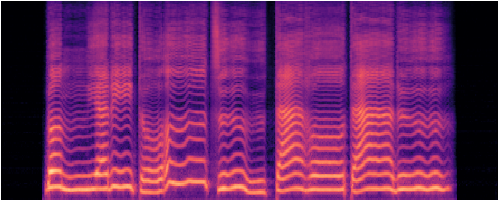 | 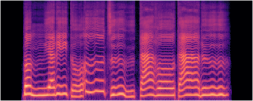 |
These are songs the model has never seen, sung from a musical score. The score is turned into an F0 curve and phoneme durations by our pitch and duration models (not yet released — coming later), then the same acoustic model and NHVSing vocoder render the audio. Three children’s songs, each sung by all three voices.
| song | Oniku Kurumi | Natsume Yuuri | Namine Ritsu |
|---|---|---|---|
| Furusato · ふるさと | |||
| Haru no Ogawa · 春の小川 | |||
| Kirakiraboshi · きらきら星 |
Bonus — Momiji (もみじ), a three-part chorus. The three voices arranged into harmony.
The full model carries Namine Ritsu’s three voice styles — default (kire), normal, and soft. One phrase (a real recording, re-rendered by copy-synthesis) is sung with the style blended continuously from default toward normal, and toward soft. Only the timbre changes — the notes, timing and pitch stay identical.
Original recording (reference):
| blend → | 0% default | 25% | 50% | 75% | 100% |
|---|---|---|---|---|---|
| → normal | |||||
| → soft |